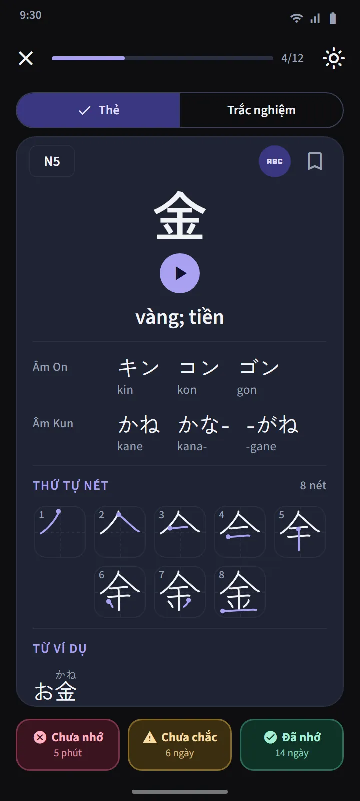
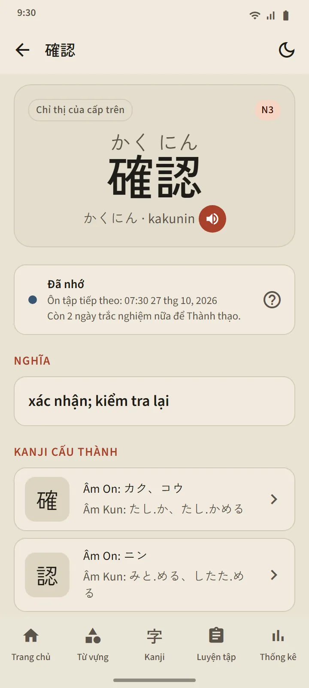
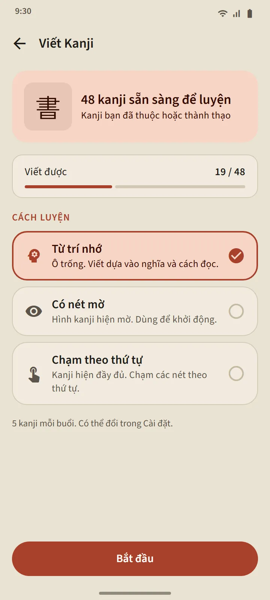

Các bộ 25 kanji theo thứ tự học ở trường Nhật
Tab Kanji được chia theo cấp độ JLPT, rồi thành các bộ khoảng 25 chữ. Trong một cấp độ, thứ tự theo chương trình học phổ thông của Nhật (lớp 1 trước), rồi theo số nét từ ít đến nhiều; những dãy đi cùng nhau, như số đếm, tên các ngày trong tuần và các mùa, được giữ đúng thứ tự. Mỗi dòng của một bộ hiển thị các chữ kanji, một thanh tiến độ, số chữ đã nhớ và thành thạo, cùng nhãn “Sẵn sàng trắc nghiệm” hoặc số chữ đến hạn.
| Cấp độ | Kanji | Truy cập |
|---|---|---|
| N5 | 103 | Miễn phí |
| N4 | 181 | Miễn phí |
| N3 | 370 | Premium |
| N2 | 369 | Premium |
| N1 | 1.207 | Premium |


Thẻ kanji và trắc nghiệm
Mặt trước của thẻ chỉ có chữ kanji. Mặt sau: nghĩa, âm On và âm Kun (kèm romaji nếu bạn muốn), một sơ đồ thứ tự nét viết với mỗi nét một khung hình và điểm bắt đầu được đánh dấu, cùng các từ ví dụ có dùng chữ đó. Ba nút giống như thẻ từ vựng sẽ lên lịch lại cho chữ.
Trắc nghiệm của một bộ mở khi có 10 kanji ở giai đoạn Đã nhớ hoặc Thành thạo, với ba dạng câu hỏi: kanji sang nghĩa, nghĩa sang kanji, và kanji sang cách đọc. Quy tắc Thành thạo cũng giống vậy: trả lời đúng trong trắc nghiệm vào ba ngày khác nhau. Ôn tập Kanji ở đầu tab gom mọi kanji đến hạn từ tất cả các bộ, còn bài kiểm tra tổng hợp kiểm tra xuyên suốt nhiều bộ.


Chi tiết kanji và các bộ thẻ đặc biệt
Trang chi tiết của mỗi chữ có nghĩa, giai đoạn và lần ôn tiếp theo, cách đọc, sơ đồ nét viết và các từ ví dụ; trang chi tiết của một từ có liên kết đến các kanji thành phần của nó. Giống như từ vựng, kanji có các bộ thẻ Đã đánh dấu, Kanji khó và Chớp nhoáng 60 giây, và một nút gạt trong phần Luyện nhanh của Trang chủ sẽ chuyển bốn ô ở đó sang phiên bản kanji.


Viết kanji bằng ngón tay
Những kanji bạn đã ở giai đoạn Đã nhớ hoặc Thành thạo có thể luyện bằng cách viết: chỉ hiện nghĩa và cách đọc, bạn viết từng nét, và mỗi nét được kiểm tra về hình dạng, hướng và thứ tự, không cần mạng. Có ba chế độ: Từ trí nhớ, Có nét mờ và Chạm theo thứ tự. Một chữ kanji được tính là “Viết được” sau khi bạn viết nó từ trí nhớ, không cần trợ giúp, vào hai ngày khác nhau.


Làm quen Kanji
11 bài ngắn về cách kanji vận hành, trước khi bắt đầu ghi nhớ: âm On và âm Kun cùng lúc nào dùng mỗi loại, okurigana, các âm biến đổi như っ và rendaku, cách đọc học thuộc như một từ, bộ thủ và thứ tự nét. Mở từ mục "Tiếng Nhật cơ bản" trên trang chủ, và miễn phí.
Nguồn dữ liệu
Nghĩa và cách đọc lấy từ KANJIDIC (Electronic Dictionary Research and Development Group) và thứ tự nét viết từ KanjiVG, cả hai theo giấy phép CC BY-SA. Cấp độ kanji là ước tính dựa trên các danh sách JLPT cũ; JLPT hiện nay không công bố danh sách kanji chính thức.